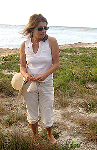

While spending time in Jamaica, West Indies, I was struck by the variety of small, colorful shells that are found on its most remote beaches. Instantly, those shells reminded me of the small pieces of stone, or tesserae, used by the Ancient Romans in creating their masterpieces. I was always fascinated by the Roman mosaics that I saw in my travels around the Mediterranean, and decided to bring the tradition into the present by using these shells for original images from my imagination.As I searched on new beaches for the material that I use in my work, I discovered the unending variations in texture, shape, pigment and detail of these shells. Nature has given me a veritable palette. The selection at my fingertips is so vast and beautiful that no enhancement of the shells' original colors is necessary. I use these shells to create fantastical, surreal still-lifes, landscapes, portraits and abstract compositions that I see as my way of capturing sunshine and the elements.
Like the shells, which take their pigment and shape from what the animals producing them eat, when composing images, I draw upon my years of visiting the art museums of the world and the art I engaged with as an amateur collector. I also follow the cue of the shells themselves. For instance, when signing my work, I use the shells that sea worms build around their serpentine bodies. My artwork allows the viewer to experience the extraordinary beauty and variety of the underwater world.